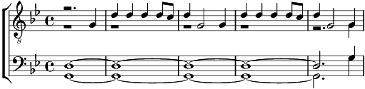

1. Là-bas au bord de la Volga, le beau village d'Oljchowka,
C'est là qu'un jour André Jaschka aima la douce Paraschka
Il s'en venait très sovent de là-haut, les bras charglés de présents, de cadeaux :
Voici des souliers au beau cuir travaillé qui font à la fille un beau pied pour danser
Viens, viens avec moi et j'irai avec toi. Vers la danse, vers le chant,
Vers Jaschka qui fait danser, c'est Jaschka qui fait danser, c'est Jaschka !
Refrain:
Quand s'éteint le jour, quand le vent du soir fait passer sa douce voix,
Il est temps d'écouter une balalaïka
Hei ! les chants, la danse et l'amour, [bis]
Danse, danse, danse encor !
Hei ! tous en choeur, tous au pas, Jschka la balalaïka !
Dam, dadadam, dadadam, dadadam, Hei ! Ah ! dadadam, dadadam, dadadam.
Il joue pour nous tous, pour les gens de partout, pour les sages et les fous,
Et ça tourne autour du monde, à l'envers et à l'endroit, Jascha !
2. C'est toi ma belle que j'aime, veux-tu me chérir de même ?
Ainsi parlait André Jaschka à la très douce Paraschka.
Monsieur son père aussitôt grimaça, et répondit : "Je ne veux rien de ça !"
Oh ! comme elle pleure l'enfant Paraschka. Oh ! car son ami plus jamais ne verra.
Mais lui que fit-il ? Il la prit avec lui, vers la danse, vers le chant,
Vers Jaschka qui fait danser, c'est Jaschka qui fait danser, c'est Jaschka !
Refrain
Coda:
C'est lui, c'est Jaschka